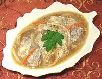

|
Pickled HerringRussia - Selyodka Marinovannaya | ||||
| Serves: Effort: Sched: DoAhead: |
6 app *** 5 days Must |
A Russian table just isn't complete without herring. In Los Angeles we can chose from dozens of imported versions, but home made is still best - if you can find the herrings. | |||
|
2-1/2 ------ 2 1 1/3 ------ 5 1-1/2 5 4 ------ 1-1/2 1 24 ------ |
# --- c c c --- oz oz --- t t --- |
Herrings (1) -- Marinade Vinegar (2) Water Sugar (3) -- Flavorings Onion Carrot Dried Chili (4) Bay Leaf -- Spices Mustard Seed Coriander Seed Peppercorns ------- |
Make - (5 days - 1-1/2 hr work)
|